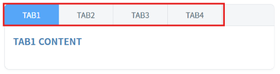
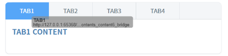
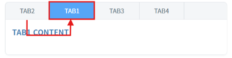
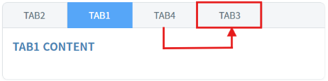
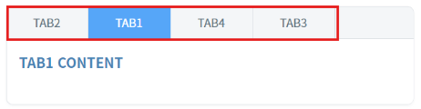
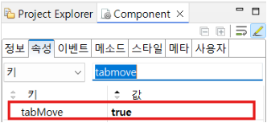

TabControl의 'tabMove' 속성을 사용해 마우스로 드래그-앤-드롭하여 탭 순서를 변경할 수 있도록 구현한 예제입니다.
드래그-앤-드롭하여 탭 순서 변경하기
(기본 동작) tabMove 미사용
두 영역의 TabControl에서 탭을 드래그-앤-드롭하여 동작을 비교합니다.
예제 영역 'tabMove : false (기본 값)'에서 테스트합니다.1
STEP 1: 초기 상태를 확인합니다.
TabControl의 탭 순서를 확인합니다.
Image 1.브라우저(Chrome) 실행 예시

2
STEP 2: 탭을 마우스로 드래그-앤-드롭하여 위치를 변경합니다.
탭 위치가 변경되지 않습니다.
Image 2.브라우저(Chrome) 실행 예시

예제 영역 'tabMove : true'에서 테스트합니다.1
STEP 1: 초기 상태를 확인합니다.
TabControl의 탭 순서를 확인합니다.
Image 3.브라우저(Chrome) 실행 예시
2
STEP 2: 탭을 마우스로 드래그-앤-드롭하여 위치를 변경합니다.
첫번째 탭을 두번째 탭 위치로 옮깁니다.
Image 4.브라우저(Chrome) 실행 예시

세번째 탭을 네번째 탭 위치로 옮깁니다.
Image 5.브라우저(Chrome) 실행 예시

3
STEP 3: 실행 결과를 확인합니다.
탭의 위치가 변경되었습니다.
Image 6.브라우저(Chrome) 실행 예시

1
TabControl의 속성을 정의합니다.
[필수] tabMove="true"
[default: false, true] 드래그-앤-드롭을 통해 탭 순서 변경을 허용합니다.
Image 7.웹스퀘어 스튜디오의 Component View - 속성 설정 예시

tabMove